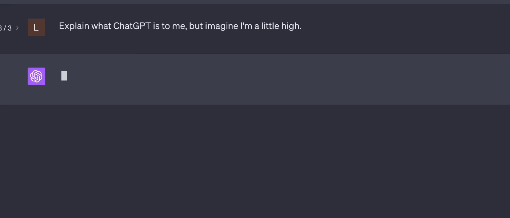

context <- "now fair hippolyta"Lab 4 - How does ChatGPT generate the next word?
Due Thursday September 25 at 11:59 PM
If you’ve ever asked ChatGPT a question, you may have noticed something; it generates its response one word at a time right before your eyes:

What exactly is it doing? Well, ask it! If you do, the explanation will go something like this…
ChatGPT is an example of a large language model (LLM). Under the hood, there’s this fancy pants deep neural network machine learning mumbo jumbo that has been trained on a massive corpus of documents (books, newspaper articles, academic publications, reddit, all of Wikipedia, etc). When you ask it a question like “What color is the apple?”, the model asks itself “conditional on the text you just gave me, what is the likely next word?” Based on the text it was trained on and the underlying ML model, ChatGPT constructs a conditional probability distribution over the set of “next words” and simulates from it, like with the sample function. The new word that it simulates gets added to the end of the text you provided, and it repeats the process over again: given where we are now, what is the next word likely to be? And on and on…
So say you ask it “What color is the apple?” Based on that, the model constructs a probability distribution for \(P(\text{next word}\,|\,\texttt{"What color is the apple?"})\). The sample space \(S\) here is (basically) the set of all words that the model has seen. That set could be pretty big, but nevertheless it is finite, so we just need to list out all of the possible words together with their individual probabilities:
| Next word | Conditional probability |
|---|---|
| red | 0.1 |
| the | 0.2 |
| apple | 0.08 |
| amphibian | 0.01 |
| green | 0.05 |
| Zito | 0.00 |
| is | 0.05 |
| etc | etc |
Once this is constructed, the model simulates from the distribution. You could imagine that the code might look something like sample(words, size = 1, prob = conditional_probs). So say that happens and the next word we simulate is “the.” That gets added to the end, and now we want to know \(P(\text{next word}\,|\,\texttt{"What color is the apple? the"})\). So we query the underlying model, and it constructs a new distribution on words, conditional on this revised context:
| Next word | Conditional probability |
|---|---|
| red | 0.09 |
| the | 0.001 |
| apple | 0.21 |
| amphibian | 0.01 |
| green | 0.05 |
| Zito | 0.00 |
| is | 0.04 |
| etc | etc |
Notice that the information we are conditioning on has changed, so the probabilities change. Based on the new probabilities, we simulate the next word. Let’s say it ends up being “apple.” So we add that to the end, and ask the model to construct a new distribution for \(P(\text{next word}\,|\,\texttt{"What color is the apple? the apple"})\):
| Next word | Conditional probability |
|---|---|
| red | 0.07 |
| the | 0.001 |
| apple | 0.00 |
| amphibian | 0.01 |
| green | 0.09 |
| Zito | 0.00 |
| is | 0.5 |
| etc | etc |
Now we simulate “is,” add that to the end, and query the model for \(P(\text{next word}\,|\,\texttt{"What color is the apple? the apple is"})\):
| Next word | Conditional probability |
|---|---|
| red | 0.35 |
| the | 0.001 |
| apple | 0.001 |
| amphibian | 0.002 |
| green | 0.2 |
| Zito | 0.00 |
| is | 0.01 |
| etc | etc |
We see at this point that “red” is the most likely next word, but we are not searching the table for the most likely next word and slavishly returning it. We are simulating. So there’s a 35% chance we’ll come up with “red,” but also a non-trivial possibility that we’ll come up with “green.” You will notice that if you ask ChatGPT the exact same question multiple times (literally the identical text prompt), it returns different answers. That is because of this element of randomness.
Obviously, the elephant in the room in the above discussion is “where did the probabilities come from?” This is the magic, such as it is, of LLMs. In order to implement this scheme, we need to be able to construct a conditional probability distribution on words given any context. So no matter if you give it “What color is the apple” or “Explain string theory like I’m a genius” or “Why did my wife leave me” or “que se passe t’il,” it needs to come up with a meaningful and useful distribution for the next word, and it has to repeat this thousands if not millions of times. There are so many possibilities that it’s kind of bonkers to expect to be able to do this, but with enough data and computing power and a big enough model, apparently we can pull it off, at least some of the time.
So, the question of “where did the probabilities come from?” is sadly beyond the scope of our course. However, the question of “what do you do with the probabilities once you have them?” is perfectly accessible to us, even at this early stage, so let’s have some fun.
Before you start
Read the explainer on random number seeds, and use them in your lab write-up today.
Baby’s first language model
The \(k\)-gram language model is I guess what you’d call a “small language model.” Next to ChatGPT, it looks prehistoric. But it is simple and can be comfortably run on a laptop. We have trained this SLM on a single document: the text of Shakespeare’s A Midsummer Night’s Dream. Given the pre-trained model we are handing you, we ask that you implement the recursive scheme above in order to generate a text response, the same way ChatGPT does.
In all cases, the starting context is
Hippolyta is Queen of the Amazons in the play. Let’s see if our model can spit game.
Task 1
We have provided you with a pre-trained language model kn, a vector midsummer_words containing the 3,063 unique words in the play, and a function next_word_probs:
cond_dist <- next_word_probs(context, midsummer_words, kn)
tail(cond_dist) words prob
3058 unearned 3.375323e-05
3059 'scape 3.375323e-05
3060 serpent's 3.375323e-05
3061 amends 6.751470e-05
3062 liar 3.375323e-05
3063 restore 3.375323e-05So, given the context, the set of possible words, and the model, it returns a table (a data frame) listing out all the words together with their conditional probabilities given the context.
Run this function and use the output together with the sample function to simulate a new word.
Task 2
Use the paste function to append the word you simulated in Task 1 to the end of context. Then, starting from this updated context, go back to the beginning, generate a new conditional distribution, and use it to simulate a new word.
Task 3
Write a for loop that iterates the process in Tasks 1 and 2 in order to add six new words to the context.
This might be a tad slow.
The function next_word_probs is doing a lot of work under the hood, so in the upcoming tasks, do not be alarmed if it takes a few seconds to run.
Task 4
Rerun your code five times to generate five different responses. How many of them would you consider approximately coherent?
Task 5
Now that you have the basic code, play around with different starting contexts besides “now fair hippolyta.” Bear in mind that our world is small here. We’ve trained the model on a single, old text, so if you want coherent responses, you should probably give it something in the ballpark of what it has seen before. I doubt “which banger slaps hardest my dude” will yield anything meaningful (though feel free to try!). For inspiration, here is the full text of the original play.
Task 6
Up to now we’ve been worrying a lot about individual words, but individual words don’t create meaning. It’s how those words interact across phrases and sentences and paragraphs. Unfortunately, we do not have methods for inducing a probability distribution over the set of all possible sentences, or the set of all possible thoughts. But in a sense, language models are attempting to approximate such a thing. And on the evidence to date, maybe they succeed sometimes. Anyway, how do we go from a method that gets things right on the word level to a method that gets things right on the sentence level? Well, therein lies the art of the engineers that work on these things, and one method they have found helpful is called temperature sampling.
So far, given the current context, the model returns a (conditional) probability \(p(i)\) for each word \(i\in \text{corpus}\). So far we’ve used these probabilities unmodified. With temperature sampling, before we draw the next word, we first adjust the probabilities based on a user-defined tuning parameter \(t>0\) called the temperature:
\[ p_t(i) = \frac{p(i)^{1/t}}{\sum\limits_{j\in\text{corpus}}p(j)^{1/t}},\quad i\in\text{corpus}. \]
If \(t=1\), we’re back to the original probabilities: \(p_1(i)=p(i)\). Otherwise, to quote the \(k\)-grams people, “higher and lower temperatures make the original probability distribution smoother and rougher, respectively. By making a physical analogy, we can think of less probable words as states with higher energies, and the effect of higher (lower) temperatures is to make more (less) likely to excite these high energy states.” Why do people do this? To the best of my knowledge, it is no deeper than “it seems to work well.” In practice, adjusting the temperature seems to have a macro effect on the overall character of the sentences.
The function next_word_probs that we gave you has a fourth argument temp where you can give it a number and it will give you the tempered probabilities. Play around with big and small values, and report any effect that it has on the overall quality of the sentences.
Think about it
As you increase the temperature and \(t\to\infty\), what does that do to the probabilities?
Task 7 (optional)
Code temperature sampling yourself. Take the probabilities that probs <- next_word_probs(...) gives you when temp = 1.0, and then use basic R commands to apply the formula above and compute a vector temp_probs with the revised numbers for temp = 0.5. Check that your numbers agree with the ones that our function next_word_probs gives when you supply 0.5 as the fourth argument.
Further reading
If you’re interested in this stuff…
- The guy who created WolframAlpha has a nice primer;
- People seemed to like this video when it made the rounds a few years back;
- “An overview of large language models for statisticians,” by several heavy-hitting ML researchers;
- “Do large language models (really) need statistical foundations?,” by Weijie Su;
-
This is the
Rpackage that we used for this lab. The LLMs of today are light years ahead of the simple \(k\)-grams model, but some concepts are timeless: tokenization, temperature sampling, etc. Whether your language model is large or small, these things are in play. So if you play around with the \(k\)-grams model, it could serve as a nice sandbox for getting familiar with those foundational concepts.